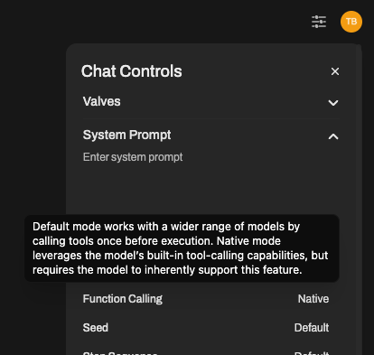

⚙️ What are Tools?
Tools are small Python scripts that add superpowers to your LLM. When enabled, they allow your chatbot to do amazing things — like search the web, scrape data, generate images, talk back using AI voices, and more.
Think of Tools as useful plugins that your AI can use when chatting with you.
🚀 What Can Tools Help Me Do?
Here are just a few examples of what Tools let your AI assistant do:
- 🌍 Web Search: Get real-time answers by searching the internet.
- 🖼️ Image Generation: Create images from your prompts.
- 🔊 Voice Output: Generate AI voices using ElevenLabs.
Explore ready-to-use tools in the 🧰 Tools Showcase
📦 How to Install Tools
There are two easy ways to install Tools in Open WebUI:
- Go to Community Tool Library
- Choose a Tool, then click the Get button.
- Enter your Open WebUI instance’s IP address or URL.
- Click “Import to WebUI” — done!
Safety Tip: Never import a Tool you don’t recognize or trust. These are Python scripts and might run unsafe code.
🔧 How to Use Tools in Open WebUI
Once you've installed Tools (we’ll show you how below), here’s how to enable and use them:
You have two ways to enable a Tool for your model:
➕ Option 1: Enable from the Chat Window
While chatting, click the ➕ icon in the input area. You’ll see a list of available Tools — you can enable any of them on the fly for that session.
Tip: Enabling a Tool gives the model permission to use it — but it may not use it unless it's useful for the task.
✏️ Option 2: Enable by Default (Recommended for Frequent Use)
- Go to: Workspace ➡️ Models
- Choose the model you’re using (like GPT-4 or LLaMa2) and click the ✏️ edit icon.
- Scroll down to the “Tools” section.
- ✅ Check the Tools you want your model to have access to by default.
- Click Save.
This ensures the model always has these Tools ready to use whenever you chat with it.
You can also let your LLM auto-select the right Tools using the AutoTool Filter:
🎯 Note: Even when using AutoTool, you still need to enable your Tools using Option 2.
✅ And that’s it — your LLM is now Tool-powered! You're ready to supercharge your chats with web search, image generation, voice output, and more.
🧠 Choosing How Tools Are Used: Default vs Native
Once Tools are enabled for your model, Open WebUI gives you two different ways to let your LLM use them in conversations.
You can decide how the model should call Tools by choosing between:
- 🟡 Default Mode (Prompt-based)
- 🟢 Native Mode (Built-in function calling)
Let’s break it down:
🟡 Default Mode (Prompt-based Tool Triggering)
This is the default setting in Open WebUI.
Here, your LLM doesn’t need to natively support function calling. Instead, we guide the model using smart tool selection prompt template to select and use a Tool.
✅ Works with almost any model ✅ Great way to unlock Tools with basic or local models ❗ Not as reliable or flexible as Native Mode when chaining tools
🟢 Native Mode (Function Calling Built-In)
If your model does support “native” function calling (like GPT-4o or GPT-3.5-turbo-1106), you can use this powerful mode to let the LLM decide — in real time — when and how to call multiple Tools during a single chat message.
✅ Fast, accurate, and can chain multiple Tools in one response ✅ The most natural and advanced experience ❗ Requires a model that actually supports native function calling
✳️ How to Switch Between Modes
Want to enable native function calling in your chats? Here's how:

- Open the chat window with your model.
- Click ⚙️ Chat Controls > Advanced Params.
- Look for the Function Calling setting and switch it from Default → Native
That’s it! Your chat is now using true native Tool support (as long as the model supports it).
➡️ We recommend using GPT-4o or another OpenAI model for the best native function-calling experience. 🔎 Some local models may claim support, but often struggle with accurate or complex Tool usage.
💡 Summary:
| Mode | Who it’s for | Pros | Cons |
|---|---|---|---|
| Default | Any model | Broad compatibility, safer, flexible | May be less accurate or slower |
| Native | GPT-4o, etc. | Fast, smart, excellent tool chaining | Needs proper function call support |
Choose the one that works best for your setup — and remember, you can always switch on the fly via Chat Controls.
👏 And that's it — your LLM now knows how and when to use Tools, intelligently.
🧠 Summary
Tools are add-ons that help your AI model do much more than just chat. From answering real-time questions to generating images or speaking out loud — Tools bring your AI to life.
- Visit: https://openwebui.com/tools to discover new Tools.
- Install them manually or with one-click.
- Enable them per model from Workspace ➡️ Models.
- Use them in chat by clicking ➕
Now go make your AI waaaaay smarter 🤖✨